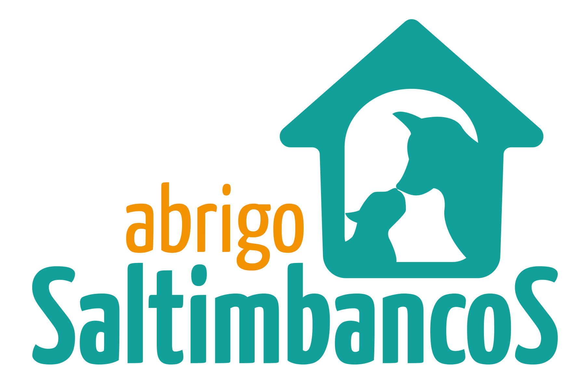

Sobre nós
Nossa luta incansável em prol dos animais excluídos e maltratados sempre será nosso
objetivo principal. Contudo, sonhamos com o dia em que um abrigo como
o "Saltimbancos" não precisará existir, pois quando isso acontecer, todos terão um lar!
Sonhar não custa nada, mas enquanto isso não acontece, seguimos com nosso trabalho.
Missão
Angariar "anjos" para ajudar mensalmente com os gastos mensais do abrigo. Priorizando
principalmente a entrada de ração para alimentação dos animais.
Promover a doação dos animais, pois eles merecem receber todo amor e carinho que só um
lar é capaz de dar.

Sobre a mantenedora do abrigo:
Gisele Cunha Rigo de 60 anos, professora de escola pública (alfabetizadora), mãe de 03
filhos adultos, tem 05 netos e adotou a pequena Sara de apenas 08 anos.
Como professora de escola pública, ganha um salário muito baixo por mês, e mesmo assim,
leva a vida ajudando o próximo. No caso dela, ajudando animais abandonados.
Seu sonho era fazer um abrigo para esses animais que tanto precisam, e há 6 anos quando
se aposentou, entregou sua vida e sua dedicação total para tornar o abrigo realidade.
Nasceu assim o Abrigo Saltimbancos <3.
Hoje são abrigados cachorros, gatos, cavalos, ovelhas, e até uma porquinha abandonada já
passou por aqui. Todos os animais que hoje vivem no abrigo, foram abandonados ou
nasceram na rua. Cada um com sua história de sofrimento e resgate.
Sobre o abrigo
O Abrigo Saltimbancos é o lar de muitos animais, de várias espécies que foram
abandonados ou nasceram nas ruas.
O sonho foi idealizado por Cida Lellis, fundadora do Clube dos Vira‐Latas e, graças aos
voluntários e anjos colaboradores, a cada dia se torna realidade. Tudo foi construído com
doações, muito sacrifício, amor, trabalho, vontade e sobretudo, honestidade.
O sitio da Gisele fica em um local cercado de verde, próximo a represa Billings. Um local
muito bonito, mas muito pobre também.
O lugar é humilde, a pequena casa é de “chão batido”, e falta portas no banheiro e no
quarto, mas o mais importante não falta... o amor!
Gisele sonha com uma reforma para os canis, pois os portões estão enferrujados,
quebrados, o chão está com muitos vãos, e é preciso colocar um muro ou cercar com grade
o sitio, para que os animais possam ficar mais tempo soltos.
Apesar das necessidades e dificuldades que são constantes, os animais são felizes e muito
bem tratados. É nítido no olhar de cada um deles, que são amados.